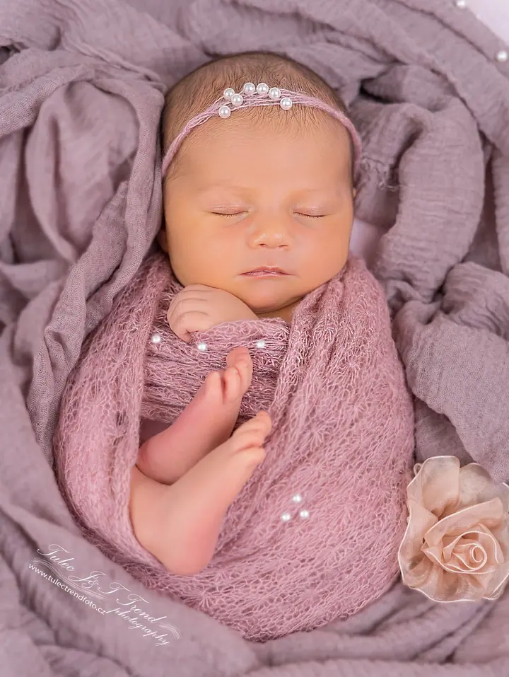
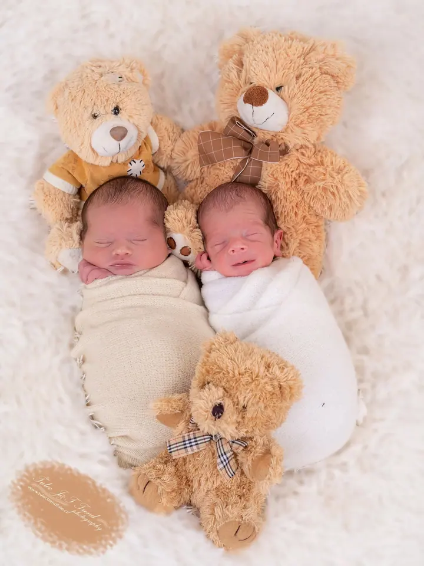
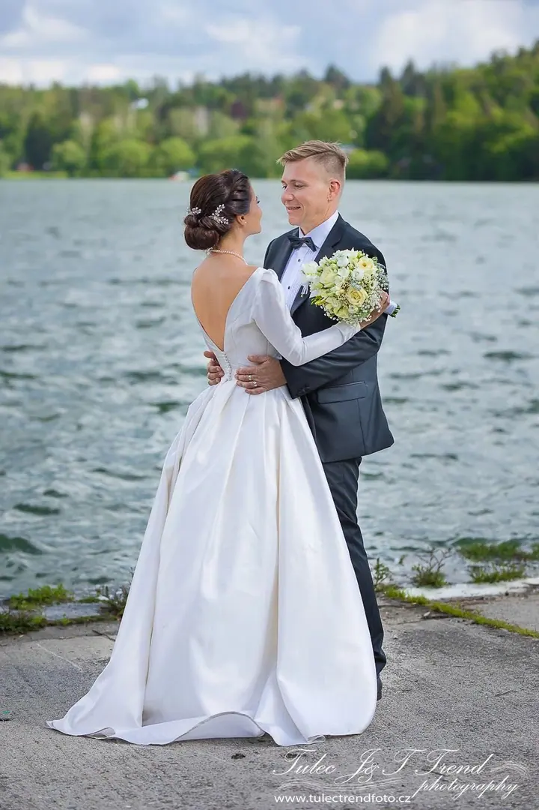
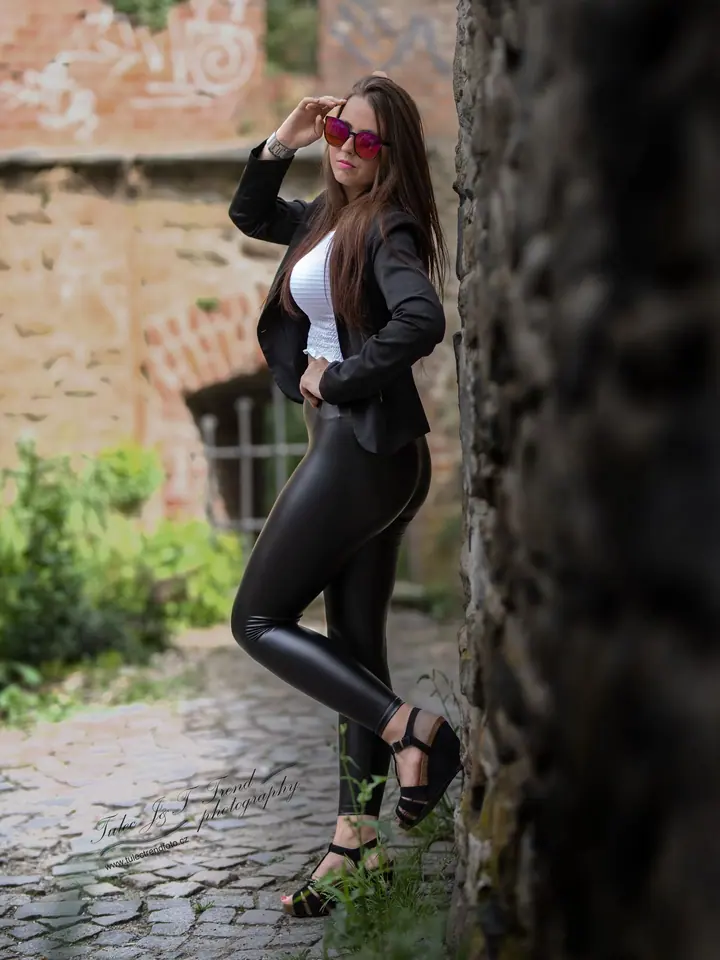
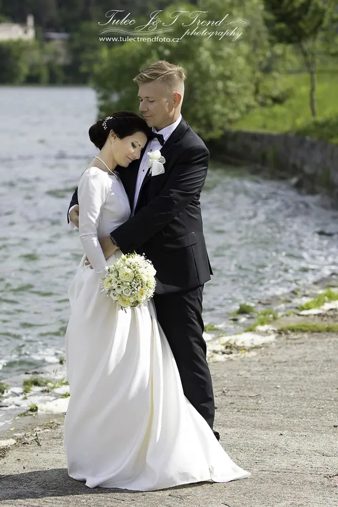
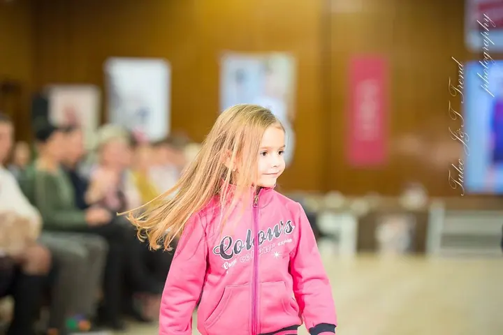

Newborn focení
Novorozence fotíme v našem vyhřívaném ateliéru v Hněvotíně, ideálně mezi 5. a 14. dnem života. Focení probíhá bezpečně a trpělivě, s ohledem na potřeby miminka i celé rodiny.





Jmenuji se Tomáš Tulec a s manželkou Janou tvoříme manželský tým Tulec Trend Foto. V ateliéru v Hněvotíně u Olomouce fotíme hlavně novorozence a budoucí maminky, venku pak rodiny s dětmi. Rádi vás doprovodíme i vaším svatebním dnem, u jezera nebo na pláži v Thajsku.
Více o mně
„Bezpečí a pohodlí vašeho miminka jsou pro nás na prvním místě.“
— Tomáš Tulec
Novorozence fotíme v našem vyhřívaném ateliéru v Hněvotíně, ideálně mezi 5. a 14. dnem života. Focení probíhá bezpečně a trpělivě, s ohledem na potřeby miminka i celé rodiny.
Svatby fotíme po celé ČR a také na pláži v Thajsku. Nabízíme všechno pod jednou střechou: vizáž, fotografie, video i fotobudku na večerní zábavu.
Fotíme v jednom z našich dvou těhotenských ateliérů s velkým výběrem šatů a doplňků, nebo venku. Nejlepší čas je mezi 30. a 36. týdnem těhotenství.
Rodinné focení bereme jako uvolněnou procházku nebo hru, ne jako strnulé stání před objektivem. Fotíme v ateliéru i venku na Olomoucku, Přerovsku a Prostějovsku.
Fotografii se věnujeme přes 20 let a newborn focení je pro nás srdeční záležitost. Každý rok k nám do ateliéru přijde přes 100 miminek a rodiče za námi jezdí z Olomouce, z celé republiky i ze zahraničí. Na focení novorozenců jsme vždycky oba, Jana i já, protože ve dvou se dá pracovat klidněji a bezpečněji.
Kromě newborn ateliéru máme i dva těhotenské ateliéry a vlastní studio vizáže, takže se před focením můžete nechat nalíčit a pak se před objektivem cítit dobře. Fotíme také rodiny, portréty, glamour a boudoir, narozeniny, křtiny a společenské akce. Svatby fotíme po celé ČR a v Thajsku, které poznávám už čtvrt století.
Zakládáme si na kvalitě, ne na množství. Neodevzdáváme stovky průměrných fotek, každý snímek pečlivě upravíme a vyretušujeme. Kromě focení se věnuji i digitálnímu restaurování starých fotografií, aby staré snímky vašich předků znovu ožily.
Napište nebo zavolejte a společně vybereme termín. U newborn focení je ideální 5. až 14. den života, u těhotenského 30. až 36. týden.
Poradíme vám, co si vzít s sebou. Kdo chce, může se před focením nechat nalíčit v našem studiu vizáže.
Fotíme v ateliéru v Hněvotíně nebo venku, beze spěchu a bez stresu. U miminek jsme vždycky oba a přizpůsobíme se jejich rytmu.
Z focení vybereme ty nejlepší snímky a každý z nich ručně upravíme a vyretušujeme.
Nejlepší je mezi 5. a 14. dnem života. Miminko v té době hodně spí a dá se bezpečně uložit do typických newborn poloh. Po 14. dni už to tak snadno nejde.
Ideálně mezi 30. a 36. týdnem těhotenství. Fotíme v jednom z našich dvou ateliérů s výběrem šatů a doplňků, nebo venku.
Ateliéry máme v Hněvotíně, jen 6 km od Olomouce. Rodiny fotíme i venku na Olomoucku, Přerovsku a Prostějovsku, svatby po celé ČR i v Thajsku.
Rodinné focení začíná na 1 600 Kč, portréty na 1 400 Kč, akce a eventy na 3 000 Kč a svatby na 12 000 Kč. Podrobnosti rádi pošleme.